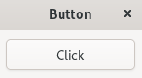
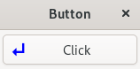

(update:2025/12/14)
Gtk::Buttonは、最も標準的なボタンを表現するためのウイジットです。
Gtk::Buttonウイジットの作成は、Gtk::Buttonのコンストラクタでラベルとなる文字列を指定します。あるいは、Gtk::Buttonのコンストラクタで定義しておいて、ラベルの文字列は、set_label( "文字列" ) を使って後から指定します。
ボタンをクリックしたときにイベントシグナル(signal_clicked)を発生させてシグナルハンドラー(ｻﾝﾌﾟﾙﾌﾟﾛｸﾞﾗﾑ1では、on_button_clicked())を起動します。
キーボードナビゲーション用のアクセラレータキーを定義するには、ラベルの文字の前にアンダースコア(_)を付け、 true オプションをmnemonicパラメータに指定します。以下に例を示します。
Gtk::Button *pbutton = new Gtk::Button( "_Click", true );

Gtk::Buttonウイジットは、それ自身が一つのコンテナーウイジットとして機能します。Gtk::Boxなどのコンテナを使用して、Gtk::Butoonの内部に複数のウイジットを格納することができます。

#include <gtkmm/window.h>
#include <gtkmm/button.h>
#include <iostream>
#include <gtkmm/application.h>
class MyWindow : public Gtk::Window
{
public:
MyWindow();
virtual ~MyWindow() = default;
protected:
//Signal handlers:
void on_button_clicked();
//Member widgets:
Gtk::Button *pm_button;
};
MyWindow::MyWindow()
{
set_title( "Button" );
pm_button = new Gtk::Button( "_Click", true );
pm_button->set_margin(10);
pm_button->signal_clicked().connect( sigc::mem_fun( *this, &MyWindow:on_button_clicked ));
set_child( *pm_button);
}
void MyWindow::on_button_clicked()
{
std::cout << "Click Button" << std::endl;
}
int main(int argc, char* argv[])
{
auto app = Gtk::Application::create( "gtkmm4.example" );
return app->make_window_and_run<MyWindow<( argc, argv );
}
#include <gtkmm/window.h>
#include <gtkmm/button.h>
#include <gtkmm/box.h>
#include <gtkmm/image.h>
#include <gtkmm/label.h>
#include <iostream>
#include <gtkmm/application.h>
class MyWindow : public Gtk::Window
{
public:
MyWindow();
virtual ~MyWindow() = default;
protected:
// signal handler:
void on_button_clicked();
// child widgets:
Gtk::Button m_button;
};
MyWindow::MyWindow()
{
auto m_pixmap = Gtk::make_managed<Gtk::Image>( "click.xpm" );
auto m_label = Gtk::make_managed<Gtk::Label>();
m_label->set_text( "Click" );
m_label->set_expand( true );
auto m_box = Gtk::make_managed<Gtk::Box>();
m_box->append( *m_pixmap );
m_box->append( *m_label );
m_button.set_child( *m_box );
set_title( "Button" );
m_button.set_margin( 5 );
m_button.set_has_frame( true );
m_button.signal_clicked().connect( sigc::mem_fun( *this, &MyWindow::on_button_clicked ));
set_child( m_button );
}
void MyWindow::on_button_clicked()
{
std::cout << "The Button was clicked." << std::endl;
}
int main( int argc, char* argv[] )
{
auto app = Gtk::Application::create( "gtkmm4.example" );
return app->make_window_and_run<MyWindow>( argc, argv );
}
XPM(X PixMap)フォーマットは、X Window systemで使用される画像ファイルフォーマットの一つです。
主にアイコンなどの定義に用いられます。
テキストファイルとして書かれており、C言語のchar型の二次元配列として記述されています。テキストエディタで直接編集することができます。
複数色に対応しており、アイコンなどを作成する際に背景を透明にすることができます。
XPMでは画像データを圧縮しないために、データサイズは大きくなる傾向があります。
一般的には ".xpm" が用いられます。
本プログラムでの使用例 "click.xpm" を以下に示します。
以下の例では、画像の幅(width)を20ピクセル、高さ(height)を20ピクセル、色の数を2色(透明、青)、1ピクセル当たり２文字で色を表現しています。色の定義は None は、透明を指定します。色の名前を直接指定したり、＃＋16進数表記で Red Green Blue を指定します。
/* XPM */
static char *openfile[] = {
/* width height num_colors chars_per_pixel */
" 20 20 2 2",
/* colors */
".. c None",
".z c #0000ff",
/* pixels */
"........................................",
"...............................z.z.z....",
"...............................z.z.z....",
"...............................z.z.z....",
"...............................z.z.z....",
"...............................z.z.z....",
"...............................z.z.z....",
"...............................z.z.z....",
".............z.................z.z.z....",
"...........z.z.................z.z.z....",
".........z.z.z.................z.z.z....",
".......z.z.z.z.................z.z.z....",
".....z.z.z.z.z.z.z.z.z.z.z.z.z.z.z.z....",
"...z.z.z.z.z.z.z.z.z.z.z.z.z.z.z.z.z....",
".....z.z.z.z.z.z.z.z.z.z.z.z.z.z.z.z....",
".......z.z.z.z..........................",
".........z.z.z..........................",
"...........z.z..........................",
".............z..........................",
"........................................"
};